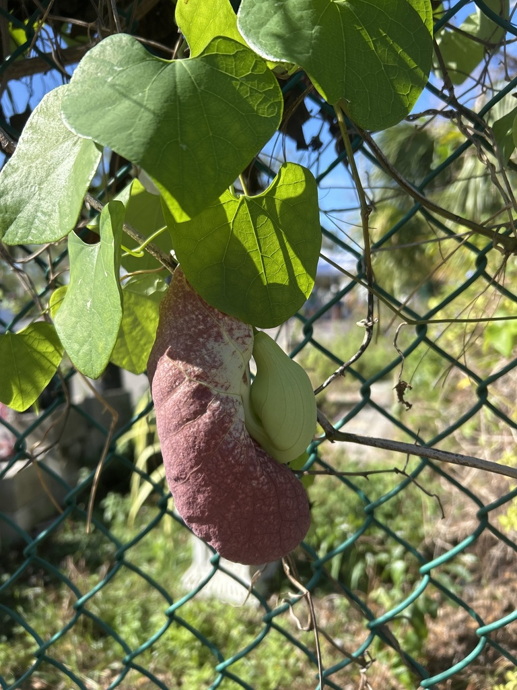

Native to the humid tropical forests of Central and South America, from Costa Rica and Panama south into Brazil — hence 'Brazilian' Dutchman's Pipe. A fast-growing, evergreen, woody twining vine that scrambles up trees and structures in the wild, exactly as ours climbs the nursery shade tree.
The Brazilian Dutchman's Pipe carries a bittersweet ecological story. Its flowers are pollinated by flies, briefly trapped inside the pipe-shaped bloom and released carrying pollen. But its relationship with butterflies is a cautionary one. Native North American pipevines are vital host plants for the pipevine swallowtail, whose caterpillars eat the leaves and take up the plant's toxins for their own defense. This tropical cousin smells enough like those native hosts that female swallowtails are fooled into laying eggs on it — but its leaves are too toxic even for them, and the hatching caterpillars usually die within about three days. So while it looks like a butterfly plant, it can act as a trap. The whole plant contains aristolochic acid, a strong toxin, which deters most browsing animals. (For supporting pipevine swallowtails, native Aristolochia species are the ones to plant — see Other Notes.)
A fast-growing, evergreen, woody twining vine, climbing by wrapping around supports; reaches 15-20+ feet (ours runs ~30 feet up the shade tree). Spreads by seed; the papery capsules split to release many wind-dispersed seeds.
Huge, apetalous, pouch- or pipe-shaped, velvety burgundy netted with ivory-white veins, 12-24 inches long; strongly scented to attract flies. Bloom mainly in the warm months (summer through winter in the tropics).
A papery, ribbed capsule that dries, browns, and splits to scatter 20+ winged, wind-borne seeds.
Light green, heart-shaped, up to 6 inches long, alternate along the twining stems; evergreen.
On the nursery fence, find the giant burgundy, ivory-veined pipe-shaped flowers and the heart-shaped leaves. Lean in for the odd lemon-polish scent. Then — the main event — look UP: follow the vine 30 feet into the shade tree and scan the high branches for more blooms hanging overhead in season.
PARK CONTEXT (Randy): Hangs on the nursery fence and climbs ~30 ft up the shade tree over the nursery. Stunning blooms; visitors love them. Randy delights in telling people to 'look up' — in season it blooms all the way up the tree and along the branches. Flower scent likened to old lemon floor polish. SPECIES NOTE: Confirmed Aristolochia gigantea via iNaturalist (matches our plant exactly). 'Giant' and 'Brazilian' Dutchman's Pipe are both common names for this one species. PSBP-00075 in iNat. BUTTERFLY CAVEAT (verified): Acts as an ecological trap for pipevine swallowtails — they lay eggs but larvae die (leaves too toxic). For actually supporting the butterfly, native Aristolochia species are needed. Worth an honest interpretive note rather than calling it a 'butterfly host.'
Toxic — do not ingest. Toxic. The entire plant contains aristolochic acid, which is poisonous and notably damaging to the kidneys (nephrotoxic). Historically misused in herbal childbirth remedies; now known to be dangerous. Do not ingest; keep away from children.